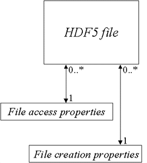
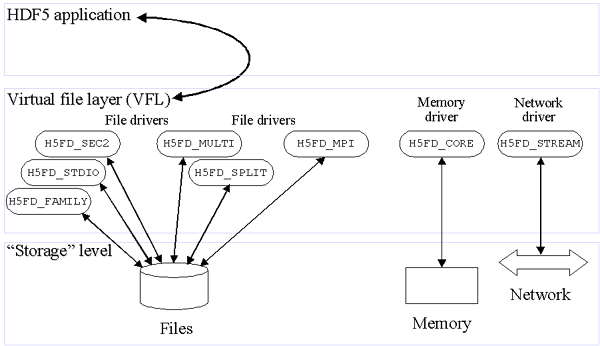

If HDF5 data is to be written to or read from a file, that file must first be explicitly created or opened with the appropriate file driver and access privileges. Once all work with data is complete, the file must be explicitly closed.
This chapter discusses the following:
The remaining sections of this chapter require a brief summary of the HDF5 mechanisms for handling file access modes, file access properties and file creation properties, and the use of low-level file drivers. These topics are discussed briefly in the following paragraphs. This chapter assumes an understanding of the material presented in the data model chapter, "HDF5 Data Model and File Structure."
File access modes
There are two issues regarding file access:
Four access modes address these concerns, with
H5Fcreate and H5Fopen
each accepting two of them:
H5Fcreate accepts H5F_ACC_TRUNC
or H5F_ACC_EXCL.
H5Fopen accepts H5F_ACC_RDONLY
or H5F_ACC_RDWR.
|
Access flag |
Resulting access mode |
|
|
If file already exists, |
|
|
If file already exists, file is opened with read-write access and new data overwrites existing data, destroying all prior content, i.e., file content is truncated upon opening. If file does not exist, it is created and opened with read-write access. |
|
|
Existing file is opened with read-only access.
If file does not exist, |
|
|
Existing file is opened with read-write access.
If file does not exist, |
The HDF5 library assumes that existing files are implicitly opened for
read access; passing the H5F_ACC_RDWR parameter to
H5Fopen allows read-write access to the file.
H5Fcreate assumes read-write access.
Passing H5F_ACC_TRUNC forces the truncation of an
existing file; otherwise H5Fcreate does not permit overwriting
an existing file.
File creation and file access properties
File creation and file access property lists control the more complex aspects of creating and accessing files.
File creation property lists control characteristics of a file, such as the size of the user-block, a user-definable data block; the size of data address parameters; properties of the B-trees are used to manage the data in the file; and certain HDF5 library versioning information.
See “File creation properties,”
below,
for a more detailed discussion of file creation properties and
appropriate references to the HDF5 Reference Manual.
If you have no special requirements for these file characteristics,
you can simply specify H5P_DEFAULT,
for the default file creation property list,
when a file creation property list is called for.
File access property lists control properties and means of accessing a file, such as data alignment characteristics, meta data block and cache sizes, data sieve buffer size, garbage collection settings, and parallel I/O. Data alignment, meta data block and cache sizes, and data sieve buffer size are factors in improving I/O performance.
See “File access properties,”
below,
for a more detailed discussion of file access properties and
appropriate references to the HDF5 Reference Manual.
If you have no special requirements for these file access characteristics,
you can simply specify H5P_DEFAULT,
for the default file access property list,
when a file access property list is called for.
Low-level file drivers
The concept of an HDF5 file is actually rather abstract: the address space for what is normally thought of as an HDF5 file might correspond to any of the following at the storage level:
HDF5 accesses a file, i.e., the address space, through various types of low-level file drivers. The default HDF5 file storage layout is as an unbuffered permanent file, which is a single, contiguous file on local disk. Alternative layouts are designed to suit the needs of a variety of systems, environments, and applications.
|  |
| Figure 1: UML model for an HDF5 file and its file creation and file access property lists |
The programming model for creating a new HDF5 file can be summarized as follows:
First consider the simple case where we wish to rely on the HDF5 defaults. All we have to do is create the file:
file_id = H5Fcreate ("SampleFile.h5",
H5F_ACC_EXCL, H5P_DEFAULT,
H5P_DEFAULT)
Note that this example specifies that H5Fcreate should fail
if SampleFile.h5 already exists.
Now consider the more generalized case, in which we
define file creation and access property lists (though we do not
assign any properties),
specify that H5Fcreate should fail if
SampleFile.h5 already exists, and
create a new file named SampleFile.h5.
The example does not specify a driver, so the default driver,
SEC2 or H5FD_SEC2, will be used.
fcplist_id = H5Pcreate (H5P_FILE_CREATE)
<...set desired file creation properties...>
faplist_id = H5Pcreate (H5P_FILE_ACCESS)
<...set desired file access properties...>
file_id = H5Fcreate ("SampleFile.h5", H5F_ACC_EXCL, fcplist_id, faplist_id)
Notes: A root group is automatically created in a file when the file is first created. File property lists, once defined, can be reused when another file is created within the same application.
The programming model for opening an existing HDF5 file can be summarized as follows:
Now consider an example in which we re-open SampleFile.h5.
For the sake of the example, we will open it with a different driver,
stdio or H5FD_STDIO, and declare read-only access.
faplist_id = H5Pcreate (H5P_FILE_ACCESS) status = H5Pset_fapl_stdio (faplist_id) file_id = H5Fopen ("SampleFile.h5", H5F_ACC_RDONLY, faplist_id)
The programming model for closing an HDF5 file is very simple:
We close SampleFile.h5 with the following line of code.
status = H5Fclose (file_id)
Note that H5Fclose flushes all unwritten data to storage.
file_id is the identifier returned for SampleFile.h5
by H5Fopen.
More comprehensive discussions regarding all of these steps are provided below.
h5dumpThe HDF5 distribution includes a command-line utility,
h5dump, which provides a straight-forward means of
inspecting the contents of an HDF5 file.
h5dump thus enables a programmer to verify that
a program is generating the intended HDF5 file.
h5dump displays ASCII output formatted according to the
HDF5 DDL grammar.
The following h5dump command will display the
contents of SampleFile.h5:
h5dump SampleFile.h5
If no datasets or groups have been created in and no data has been written to the file, the output will look something like the following:
HDF5 "SampleFile.h5" { GROUP "/" { } }
Note that the root group, indicated above by /,
was automatically created when the file was created.
h5dump is fully described on the
Tools page of the
HDF5 Reference Manual.
The HDF5 DDL grammar is fully described in the document
DDL in BNF for HDF5,
an element of this HDF5 User's Guide.
|
C Function
|
Purpose |
|
|
Creates new HDF5 file. |
|
|
Opens existing HDF5 file. |
|
|
Closes HDF5 file. |
|
|
Flushes data to HDF5 file on storage medium. |
|
C Function
|
Purpose |
|
|
Sets/retrieves size of user block. |
|
|
Sets/retrieves byte size of offsets and lengths used to address objects in HDF5 file. |
|
|
Sets/retrieves size of parameters used to control symbol table nodes. |
|
|
Sets/retrieves size of parameter used to control B-trees for indexing chunked datasets. |
|
|
Retrieves version information for various objects for file creation property list. |
|
C Function
|
Purpose |
|
|
Sets the minimum meta data block size or retrieves the current meta data block size setting. |
|
|
Sets/retrieves maximum size of data sieve buffer. |
|
|
Sets/retrieves alignment properties. |
|
|
Sets/retrieves meta data cache and raw data chunk cache parameters. |
|
|
Sets/retrieves file close degree property. |
|
|
Sets/retrieves garbage collecting references flag. |
|
C Function
|
Purpose |
|
|
Determines driver used to create file. |
|
|
Sets driver for unbuffered permanent files or retrieves information regarding driver. |
|
|
Sets driver for buffered permanent files. |
|
|
Sets driver for files on parallel file systems (MPI I/O) or retrieves information regarding the driver. |
|
|
Sets driver for file families, designed for systems that do not support files larger than 2 gigabytes, or retrieves information regarding driver. |
|
|
Sets driver for multiple files, separating categories of meta data and raw data, or retrieves information regarding driver. |
|
|
Sets driver for split files, a limited case of multiple files with one meta data file and one raw data file. |
|
|
Sets driver for buffered memory files (i.e., in RAM) or retrieves information regarding driver. |
|
|
Sets driver for streaming data (i.e., no stored file) or retrieves information regarding driver. |
|
|
Sets logging driver. |
This step is optional; you can always rely on the default property lists in creating a new file and the default or previously-defined file access property list with an existing file.
See “File Property Lists,” below, for details of setting property list values. See “File Access Modes,” in the introduction to this chapter above, for the complete list of file access flags and their descriptions.
New HDF5 files are created and opened with H5Fcreate;
existing files are opened with H5Fopen.
Both functions return an object identifier, which must eventually
be released by calling H5Fclose.
H5Fcreate:
hid_t H5Fcreate (const char *name,
unsigned flags,
hid_t fcpl_id,
hid_t fapl_id)
H5Fcreate creates a new file named name
in the current directory.
The file is opened with read and write access;
if the H5F_ACC_TRUNC flag is set, any pre-existing file
of the same name in the same directory is truncated.
If either H5F_ACC_TRUNC is not set or
H5F_ACC_EXCL is set and if a file of the same name exists,
H5Fcreate will fail.
The new file is created with the properties specified in the property
lists fcpl_id and fapl_id.
Specifying H5P_DEFAULT for either the creation or access
property list calls for the library's default creation or access properties.
If H5Fcreate successfully creates the file,
it returns a file identifier for the new file. This identifier will be
used by the application any time an object identifier, an OID, for the
file is required. Once the application has finished working with a file,
the identifier should be released and the file closed with
H5Fclose.
H5Fopen:
hid_t H5Fopen (const char *name, unsigned flags,
hid_t fapl_id)
H5Fopen opens an existing file with
read-write access if H5F_ACC_RDWR is set and
read-only access if H5F_ACC_RDONLY is set.
fapl_id is the file access property list identifier.
Alternatively, H5P_DEFAULT indicates that the application
relies on the default I/O access parameters.
Creating and changing access property lists is documented further below.
A file can be opened more than once via multiple H5Fopen calls.
Each such call returns a unique file identifier and the file can be
accessed through any of these file identifiers as long as they remain valid.
Each of these file identifiers must be released by calling
H5Fclose when it is no longer needed.
H5Fclose both closes a file and releases the
file identifier returned by H5Fopen or H5Fcreate.
H5Fclose must be called when an application
is done working with a file;
while the HDF5 library makes every effort to maintain file integrity,
failure to call H5Fclose may result in the file
being abandoned in an incomplete or corrupted state.
H5Fclose:
herr_t H5Fclose (hid_t file_id)
This function releases resources associated with an open file.
After closing a file, the file identifier,
file_id, cannnot be used again
as it will be undefined.
H5Fclose fulfills three purposes:
to ensure that the file is left in an uncorrupted state,
to ensure that all data has been written to the file,
and to release resources. Use
H5Fflush
if you wish to ensure that all data has been written to the file
but it is premature to close it.
Note regarding serial mode behavior:
When H5Fclose is called in serial mode,
it closes the file and terminates new access to it,
but it does not terminate access to objects that remain
individually open within the file.
That is, if H5Fclose is called for a file but one or
more objects within the file remain open, those objects will remain
accessible until they are individually closed.
To illustrate, assume that a file, fileA, contains
a dataset, data_setA, and that both are open when
H5Fclose is called for fileA.
data_setA will remain open and accessible,
including writable, until it is explicitly closed.
The file will be automatically and finally closed once all objects within
it have been closed.
Note regarding parallel mode behavior:
Once H5Fclose has been called in parallel mode,
access is no longer available to any object within the file.
Additional information regarding file structure and access
are passed to H5Fcreate and H5Fopen
through property list objects.
Property lists provide a portable and extensible method of
modifying file properties via simple API functions.
There are two kinds of file-related property lists:
In the following subsections, we discuss only one file creation property, user-block size, in detail as a model for the user. Other file creation and file access properties are mentioned and defined briefly, but the model is not expanded for each; complete syntax, parameter, and usage information for every property list function is provided in the “H5P: Property List Interface” chapter of the HDF5 Reference Manual.
If you do not wish to rely on the default file creation and
access properties, you must first create a property list with
H5Pcreate.
hid_t H5Pcreate (hid_t cls_id)
type is the type of property list being created.
In this case, the appropriate values are
H5P_FILE_CREATE for a file creation property list and
H5P_FILE_ACCESS for a file access property list.
Thus, the following calls create first a file creation property list
then a file access property list with identifiers
fcpl_id and fapl_id, respectively:
fcpl_id = H5Pcreate (H5P_FILE_CREATE) fapl_id = H5Pcreate (H5P_FILE_ACCESS)
File creation property lists control the file meta data, which is maintained in the super block of the file. These properties are used only when a file is first created.
herr_t H5Pset_userblock (hid_t plist,
hsize_t size)
herr_t H5Pget_userblock (hid_t plist,
hsize_t *size)
The user-block is a fixed-length block of data
located at the beginning of the file and which is ignored by the
HDF5 library.
This block is specifically set aside for any data or information
that developers determine to be useful to their application but
that will not be used by the HDF5 library.
The size of the user-block is defined in bytes
and may be set to any power of two, with a minimum size of 512 bytes
(i.e. 512, 1024, 2048, etc).
This property is set with H5Pset_userblock
and queried via H5Pget_userblock.
For example, if an application was thought to reqire a 4K user-block,
that could be set with the following function call:
status = H5Pset_userblock(fcpl_id, 4096)
The property list could later be queried with
status = H5Pget_userblock(fcpl_id, size)
and the value 4096 would be returned in the parameter
size.
Other properties, below, are set and queried in exactly the same manner. Syntax and usage are detailed in “H5P: Property List Interface” in the HDF5 Reference Manual.
This property specifies the number of bytes used to store the offset and length of objects in the HDF5 file. Values of 2, 4, and 8 bytes are currently supported to accommodate 16-bit, 32-bit, and 64-bit file address spaces.
These properties are set and queried via
H5Pset_sizes and H5Pget_sizes.
The size of symbol table B-trees can be controlled by setting the 1/2-rank and 1/2-node size parameters of the B-tree.
These properties are set and queried via
H5Pset_sym_k and H5Pget_sym_k.
The size of indexed storage B-trees can be controlled by setting the 1/2-rank and 1/2-node size parameters of the B-tree.
These properties are set and queried via
H5Pset_istore_k and H5Pget_istore_k.
Various objects in an HDF5 file may over time appear in different versions. The HDF5 library keeps track of the version of each object in the file.
This section discusses file access properties that are not related to the low-level file drivers. File drivers are discussed separately in “Alternate File Storage Layouts and Low-level File Drivers,” later in this chapter.
File access property lists control various aspects of file I/O and structure.
H5Pset_alignment function.
Two values are involved,
H5Pset_meta_block_size sets the minimum size in bytes
of meta data block allocations.
H5Pget_meta_block_size retrieves the current
minimum meta data block allocation size.
H5Pset_cache sets the minimum cache size for both
meta data and raw data and a preemption value for raw data chunks.
H5Pget_cache retrieves the current values.
H5Pset_sieve_buf_size sets the maximum size in bytes
of the data sieve buffer.
H5Pget_sieve_buf_size retrieves the current maximum size
of the data sieve buffer.
1) and the
user passes in an uninitialized value in a reference structure,
the heap might become corrupted.
When garbage collection is off (0), however,
and the user re-uses a reference, the previous heap block
will be orphaned and not returned to the free heap space.
When garbage collection is on, the user must initialize the
reference structures to 0 or risk heap corruption.
H5Pset_gc_references sets the garbage collecting
references flag.
The concept of an HDF5 file is actually rather abstract: the address space for what is normally thought of as an HDF5 file might correspond to any of the following:
HDF5 employs an extremely flexible mechanism called the virtual file layer, or VFL, for file I/O. A full understanding of the VFL is only necessary if you plan to write your own drivers (see "Virtual File Layer" and "List of VFL Functions" in the HDF5 Technical Notes). For our purposes here, it is sufficient to know that the low-level drivers used for file I/O reside in the VFL, as illustrated in the following figure.
|  |
| Figure 2: I/O path from application through VFL and low-level drivers to storage level |
As mentioned above, HDF5 applications access HDF5 files through
various low-level file drivers.
The default HDF5 file storage layout is as an unbuffered permanent file,
which is a single, contiguous file on local disk.
The default driver for that layout is the
SEC2 driver, H5FD_SEC2.
Alternative layouts and drivers are designed to suit the needs of
a variety of systems, environments, and applications.
The following table lists the supported drivers distributed with the HDF5 library and their associated file storage layouts.
|
Storage layout |
Driver |
Intended usage |
|
Unbuffered permanent file |
|
Permanent file on local disk with minimal buffering. |
|
Buffered permanent file |
|
Permanent file on local disk with additional low-level buffering. |
|
File family |
|
Several files that, together, constitute a single virtual HDF5 file. Designed for systems that do not support files larger than 2 gigabytes. |
|
Multiple files |
|
Separate files for different types of meta data and for raw data. |
|
Split files |
|
Two files, one for meta data and one for raw data
(limited case of |
|
Parallel files (MPI I/O) |
|
Parallel files accessed via the MPI I/O layer. The standard HDF5 file driver for parallel file systems. |
|
Buffered temporary file |
|
Temporary file maintained in memory, not written to disk. |
|
Streaming I/O |
|
Streaming I/O over network, no file maintained. |
|
Access logs |
|
The SEC2 driver with logging capabilities. |
Note that the low-level file drivers manage alternative file storage layouts. Alternative dataset storage layouts, such as chunking, compression, and external dataset storage, are orthogonal to file storage layout and are managed independently.
If an application requires a special-purpose low-level driver, the VFL provides a public API for creating one. But that activity is beyond the scope of this document (see "Virtual File Layer" and "List of VFL Functions" in the HDF5 Technical Notes).
When creating a new HDF5 file, no history exists, so the file driver must be specified if it is to be other than the default.
When opening existing files, however, the application may need
to determine which low-level driver was used to create the file.
The function H5Pget_driver is used for this purpose.
hid_t H5Pget_driver (hid_t fapl_id)
H5Pget_driver returns a constant identifying the
low-level driver for the access property list fapl_id.
For example, if the file was created with the
SEC2 driver,
H5Pget_driver returns H5FD_SEC2.
fapl_id has presumably been previously identified as the access property list for the file being opened.
If the application opens an HDF5 file without both determining the driver used to create the file and setting up the use of that driver, the HDF5 library will examine the Super Block and the Driver Definition Block to identify the driver. See the HDF5 File Format Specification for detailed descriptions of the Super Block and the Driver Definition Block.
The SEC2 driver, H5FD_SEC2,
uses functions from section 2 of the Posix manual
to access unbuffered files stored on a local file system.
The HDF5 library buffers meta data regardless of the low-level driver,
but using this driver prevents data from being buffered again
by the lowest layers of the library.
The function H5Pset_fapl_sec2 sets the file access
properties to use the SEC2 driver.
herr_t H5Pset_fapl_sec2 (hid_t fapl_id)
Any previously-defined driver properties are erased from the property list.
Additional parameters may be added to this function in the future.
Since there are no additional variable settings associated with
the SEC2 driver, there is no H5Pget_fapl_sec2 function.
The STDIO driver, H5FD_STDIO
also accesses permanent files in a local file system, but with an
additional layer of buffering beneath the HDF5 library.
The function H5Pset_fapl_stdio sets the file access properties
to use the STDIO driver.
herr_t H5Pset_fapl_stdio (hid_t fapl_id)
Any previously defined driver properties are erased from the property list.
Additional parameters may be added to this function in the future.
Since there are no additional variable settings associated with
the STDIO driver,
there is no H5Pget_fapl_stdio function.
HDF5 files can become quite large, creating problems on systems that do not support files larger than 2 gigabytes. The HDF5 file family mechanism is designed to solve the problems this creates by simply splitting the HDF5 file address space across several smaller files. This structure does nothing to segregate meta data and raw data; they are mixed in the address space just as they would be in a single contiguous file.
HDF5 applications access such a family of files via the
FAMILY driver, H5FD_FAMILY.
The functions H5Pset_fapl_family and
H5Pget_fapl_family are used to manage file family properties:
herr_t H5Pset_fapl_family (hid_t fapl_id,
hsize_t memb_size,
hid_t member_properties)
herr_t H5Pget_fapl_family (hid_t fapl_id,
hsize_t *memb_size,
hid_t *member_properties)
Each member of the family is the same
logical size, though the size and
disk storage reported by file system listing tools
(e.g., 'ls -l' on a UNIX system or the detailed folder
listing on a Macintosh or Microsoft Windows system) may be
substantially smaller.
The name passed to H5Fcreate or H5Fopen
should include a printf(3c)-style integer format specifier
which will be replaced with the family member number.
The first family member is numbered zero (0).
H5Pset_fapl_family sets the access properties to use the
FAMILY driver; any previously defined
driver properties are erased from the property list.
member_properties will serve as the file access
property list for each member of the file family.
memb_size specifies the logical size, in bytes,
of each family member.
memb_size is used only when creating a new file
or truncating an existing file; otherwise the member size is determined
by the size of the first member of the family being opened.
Note: If the size of the off_t type is four bytes,
the maximum family member size is usually 2^31-1 because the byte at
offset 2,147,483,647 is generally inaccessible.
H5Pget_fapl_family is used to retrieve file family properties.
If the file access property list is set to use the
FAMILY driver, member_properties
will be returned with a pointer to a copy of the appropriate
member access property list.
If memb_size is non-null, it will contain
the logical size, in bytes, of family members.
Additional parameters may be added to these functions in the future.
UNIX tools and an HDF5 utility
It occasionally becomes necessary to
repartition a file family.
A command-line utility for this purpose, h5repart, is
distributed with the HDF5 library.
h5repart [-v]
[-b block_size[suffix]]
[-m member_size[suffix]]
source destination
h5repart repartitions an HDF5 file by copying the source file
or file family to the destination file or file family, preserving holes
in the underlying UNIX files. Families are used for the source and/or
destination if the name includes a printf-style integer
format such as %d.
The -v switch prints input and output file names on the
standard error stream for progress monitoring,
-b sets the I/O block size (the default is 1kB), and
-m sets the output member size if the destination is a
family name (the default is 1GB).
block_size and member_size
may be suffixed with the letters g, m, or
k for GB, MB, or kB respectively.
The h5repart utility is fully described on the
Tools page of the
HDF5 Reference Manual.
An existing HDF5 file can be split into a family of files by running
the file through split(1) on a UNIX system and numbering
the output files.
However, the HDF5 library is lazy about extending the size of family members,
so a valid file cannot generally be created by concatenation of the
family members.
Splitting the file and rejoining the segments by concatenation
(split(1) and cat(1) on UNIX systems)
does not generate files with holes;
holes are preserved only through the use of h5repart.
In some circumstances, it is useful to separate meta data from raw data and some types of meta data from other types of meta data. Situations that would benefit from use of the MULTI driver include the following:
The MULTI driver, H5FD_MULTI,
provides a mechanism for segregating raw data and
different types of meta data into multiple files.
The functions H5Pset_fapl_multi and
H5Pget_fapl_multi are used to manage access properties
for these multiple files:
herr_t H5Pset_fapl_multi (hid_t fapl_id,
const H5FD_mem_t *memb_map,
const hid_t *memb_fapl,
const char * const *memb_name,
const haddr_t *memb_addr,
hbool_t relax)
herr_t H5Pget_fapl_multi (hid_t fapl_id,
const H5FD_mem_t *memb_map,
const hid_t *memb_fapl,
const char **memb_name,
const haddr_t *memb_addr,
hbool_t *relax)
H5Pset_fapl_multi sets the file access properties
to use the MULTI driver;
any previously defined driver properties are erased from the property list.
With the MULTI driver invoked, the application
will provide a base name to H5Fopen or H5Fcreate.
The files will be named by that base name as modified by the rule
indicated in memb_name.
File access will be governed by the file access property list
memb_properties.
See H5Pset_fapl_multi and H5Pget_fapl_multi in the HDF5 Reference Manual for complete descriptions of these functions and their usage.
Additional parameters may be added to these functions in the future.
The SPLIT driver, H5FD_SPLIT,
is a limited case of the MULTI driver,
creating exactly two files:
one containing all the meta data and another for raw data.
The function H5Pset_fapl_split is used to manage
SPLIT file access properties:
herr_t H5Pset_fapl_split (hid_t access_properties,
const char *meta_extension,
hid_t meta_properties,
const char *raw_extension,
hid_t raw_properties
H5Pset_fapl_split sets the file access properties
to use the SPLIT driver; any previously
defined driver properties are erased from the property list.
With the SPLIT driver invoked, the
application will provide a base file name, file_name
to H5Fcreate or H5Fopen.
The meta data and raw data files in storage will then be named
file_name.meta_extension and
file_name.raw_extension, respectively.
For example, if
meta_extension is defined as .meta and
raw_extension is defined as .raw,
the final filenames will be
file_name.meta and file_name.raw.
Each file can have its own file access property list. This allows the creative use of other low-level file drivers. For instance, the meta data file can be held in RAM and accessed via the CORE driver while the raw data file is stored on disk and accessed via the SEC2 driver. Meta data file access will be governed by the file access property list in meta_properties. Raw data file access will be governed by the file access property list in raw_properties.
Additional parameters may be added to these functions in the future.
Since there are no additional variable settings associated with
the SPLIT driver,
there is no H5Pget_fapl_split function.
Most of the low-level file drivers described here are for use with
serial applications on serial systems.
Parallel environments, on the other hand, require a parallel low-level driver.
HDF5 relies on MPI I/O in parallel environments and the
MPI driver, H5FD_MPI,
for parallel file access.
The functions H5Pset_fapl_mpio and
H5Pget_fapl_mpio
are used to manage parallel file access properties.
herr_t H5Pset_fapl_mpio (hid_t fapl_id,
MPI_Comm comm,
MPI_info info)
herr_t H5Pget_fapl_mpio (hid_t fapl_id,
MPI_Comm *comm,
MPI_info *info)
The file access properties managed by H5Pset_fapl_mpio
and retrieved by H5Pget_fapl_mpio are
the MPI communicator, comm, and
the MPI info object, info.
comm is the MPI communicator to be used for
file open.
info is the MPI info object,
an information object much like an HDF5 property list,
to be used for file open.
Both are defined in MPI_FILE_OPEN of MPI-2.
The communicator and the info object are saved in the file access
property list fapl_id.
fapl_id can then be passed to
MPI_File_open to create and/or open the file.
This function does not create duplicate comm
or info objects.
Any modification to either object after this function call returns
may have an undetermined effect on the access property list;
users should not modify either of the comm
or info objects while they are defined
in a property list.
H5Pset_fapl_mpio and H5Pget_fapl_mpio
are available only in the parallel HDF5 library and are not collective
functions.
The MPI driver is available only in
the parallel HDF5 library.
Additional parameters may be added to these functions in the future.
There are several situations in which it is it is reasonable, sometimes even required, to maintain a file entirely in system memory. You might want to do so if, for example, either of the following conditions apply:
The CORE driver, H5FD_CORE,
provides a mechanism for creating and managing such in-memory files.
The functions H5Pset_fapl_core and
H5Pget_fapl_core manage CORE
file access properties:
herr_t H5Pset_fapl_core (hid_t access_properties,
size_t block_size,
hbool_t backing_store)
herr_t H5Pget_fapl_core (hid_t access_properties,
size_t *block_size),
hbool_t *backing_store)
H5Pset_fapl_core sets the file access property list
to use the CORE driver;
any previously defined driver properties are erased from the
property list.
Memory for the file will always be allocated in units of the
specified block_size.
backing_store is a boolean flag indicating
whether to write the file contents to disk when the file is closed.
If backing_store is set to
1 (TRUE), the file contents are flushed
to a file with the same name as the CORE
file when the file is closed or access to the file is terminated in memory.
If backing_store is set to
0 (FALSE), the file is not saved.
If the file access property list is set to use the
CORE driver, H5Pget_fapl_core
will return block_size and
backing_store with the relevant file access
property settings.
Note the following important points regarding in-memory files:
H5Fcreate.
The name assigned in H5Fcreate is used
only if
backing_store is set and cannot be used
with H5Fopen to obtain a new file identifier.
H5Fopen will always fail.
backing_store is set to 1.
Additional parameters may be added to these functions in the future.
The STREAM driver is designed for situations where data is to be streamed across the network rather than written to a local file.
The functions H5Pset_fapl_stream and
H5Pget_fapl_stream are used to manage
streaming file access properties:
herr_t H5Pset_fapl_stream (hid_t fapl_id,
H5FD_stream_fapl_t *fapl)
herr_t H5Pget_fapl_stream (hid_t fapl_id,
H5FD_stream_fapl_t *fapl)
H5Pset_fapl_stream sets up the use of the
STREAM driver.
fapl_id is the identifier for the
file access property list currently in use.
fapl is the streaming file access property list
and is an H5FD_stream_fapl_t struct containing the
following elements:
size_t |
increment |
H5FD_STREAM_SOCKET_TYPE |
socket |
hbool_t |
do_socket_io |
unsigned int |
backlog |
H5FD_stream_broadcast_t |
broadcast_fn |
void * |
broadcast_arg |
increment specifies how much memory
to allocate each time additional memory is required.
socket is an external socket descriptor;
if a valid socket argument is provided, that socket will be used.
do_socket_io is a boolean value specifying
whether to perform I/O on socket.
backlog is the argument for the
listen call.
broadcast_fn is the broadcast callback
function.
broadcast_arg is the user argument to
the broadcast callback function.
H5Pget_fapl_stream retrieves the values stored in
the fapl struct.
H5Pset_fapl_stream and H5Pget_fapl_stream
are not intended for use in parallel environments.
The LOG driver, H5FD_LOG, is
designed for situations where it is necessary to log file access activity.
The function H5Pset_fapl_log is used to manage
logging properties:
herr_t H5Pset_fapl_log (hid_t fapl_id,
const char *logfile,
unsigned int flags,
size_t buf_size)
H5Pset_fapl_log sets the file access property list
to use the LOG driver.
File access characteristices are identical to access via the
SEC2 driver.
Any previously defined driver properties are erased from the property list.
Log records are written to the file logfile.
The following values of verbosity set the
indicated logging levels:
0
| Performs no logging. |
1
| Records where writes and reads occur in the file. |
2
| Records where writes and reads occur in the file and what kind of data is written at each location: raw data or any of several types of metadata (object headers, superblock, B-tree data, local headers, or global headers). |
There is no H5Pget_fapl_log function.
Additional parameters may be added to this function in the future.
H5ACC_TRUNC flagThe following example creates a new file with the default file creation
and file access properties.
Since H5Fcreate is called with the H5ACC_TRUNC
flag, any existing file content is overwritten if the file already exists,
i.e., it is truncated.
If H5Fcreate should fail if the file already exists,
use the flag H5ACC_TRUNC instead of H5ACC_TRUNC.
hid_t file; /* identifier */ /* Create a new file using H5F_ACC_TRUNC access, default file * creation properties, and default file access properties. */ file = H5Fcreate(FILE, H5F_ACC_TRUNC, H5P_DEFAULT, H5P_DEFAULT); /* Close the file. */ status = H5Fclose(file);
This example shows how to create a file with 64-bit object offsets and lengths:
hid_t create_plist;
hid_t file_id;
create_plist = H5Pcreate(H5P_FILE_CREATE);
H5Pset_sizes(create_plist, 8, 8);
file_id = H5Fcreate("test.h5", H5F_ACC_TRUNC,
create_plist, H5P_DEFAULT);
.
.
.
H5Fclose(file_id);
This example shows how to open an existing file for independent datasets access by MPI parallel I/O:
hid_t access_plist;
hid_t file_id;
access_plist = H5Pcreate(H5P_FILE_ACCESS);
H5Pset_fapl_mpi(access_plist, MPI_COMM_WORLD, MPI_INFO_NULL);
/* H5Fopen must be called collectively */
file_id = H5Fopen("test.h5", H5F_ACC_RDWR, access_plist);
.
.
.
/* H5Fclose must be called collectively */
H5Fclose(file_id);